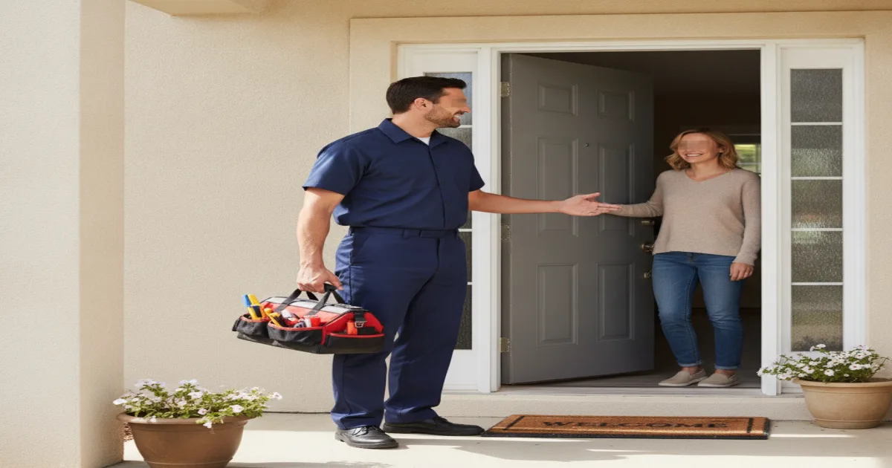

About Pete's Plumbing
We're a locally owned plumbing company serving Armonk and the surrounding Westchester County communities, with more than 15 years of hands-on experience in local homes.
- Locally Owned & Operated
- 15+ Years of Experience
- Licensed & Insured
- Clean, Respectful Technicians

A local plumber, not a call center
Pete's Plumbing is locally owned and operated, based right here in Westchester County. For more than 15 years, we've helped homeowners and small businesses in Armonk and nearby towns with everyday repairs, emergency plumbing, water heaters, drain cleaning, leak repairs, sewer line concerns, fixture installations, and more.
When you call, you're talking to people who actually know this area, not a scheduling line for a national franchise. We show up, look at what's really going on, and explain it to you in plain language before anything gets fixed.
How we work
We built our reputation on honest recommendations and clear communication. That means we tell you what's actually wrong, walk you through your options, and give you a firm price before we start any work. We don't add pressure and we don't push upgrades you don't need.
Our technicians show up clean, respectful, and ready to treat your home the way they'd want their own home treated. We work on both residential properties and small commercial buildings, so whether it's a house call or a light commercial job, you get the same level of care.
Experience with the homes Armonk actually has
Westchester County homes come in every age and style, and we've worked on most of them. That includes septic-connected plumbing, where the plumbing and the septic system have to work together correctly. It also includes finished basements, where a plumbing problem can mean real property damage if it's not caught early. And it includes sump pumps, which need to be sized and installed right to keep water out during heavy rain.
We're also familiar with the quirks of older plumbing systems, from outdated pipe materials to fixtures that were never quite right to begin with. Add in the cold-weather pipe issues that come with Northeast winters, and if a pipe freezes or a system acts up because of the season, we've likely already seen it in another Armonk-area home.
What you can count on
- Licensed & Insured
- Westchester County Licensed Plumber
- Same-Day Service Available
- Emergency Plumbing Available
- Upfront Pricing
- Clean, Respectful Technicians
- Locally Owned & Operated
- Residential & Light Commercial Plumbing
Curious exactly what that looks like for your situation? Take a closer look at everything we offer, or reach out to schedule a visit and we'll take it from there.